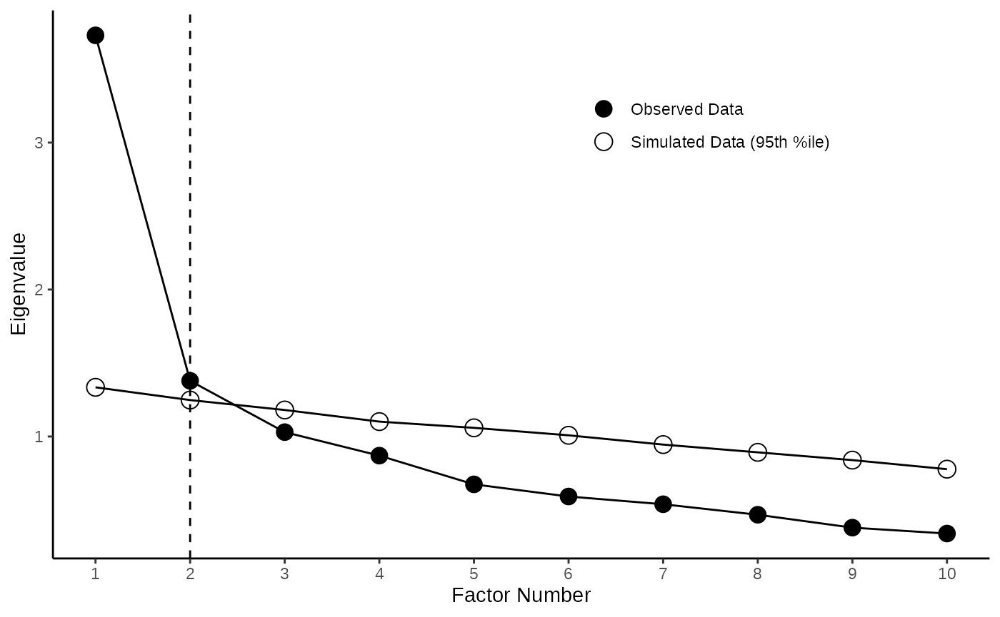
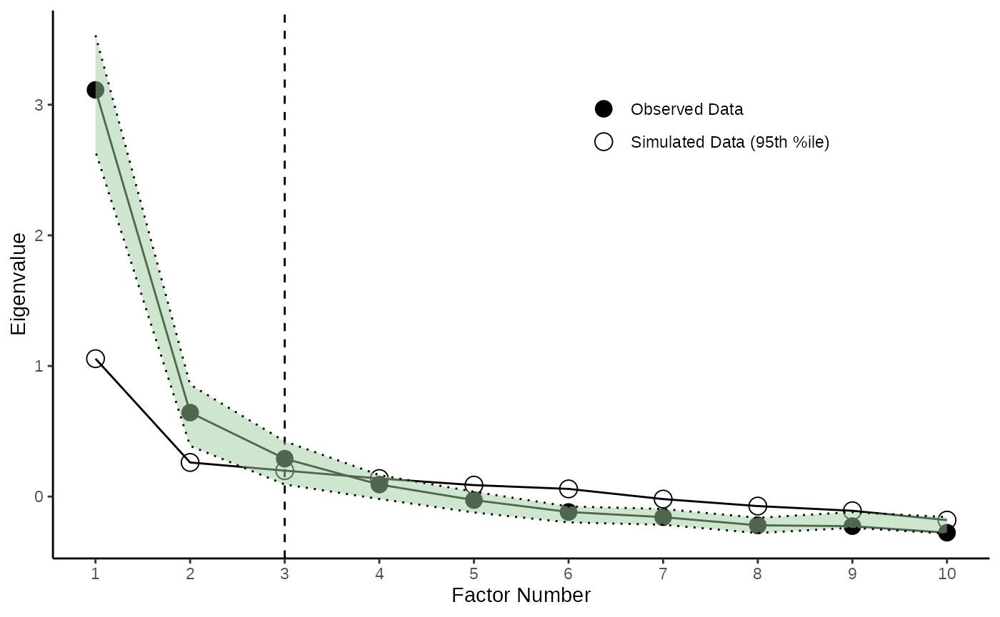

Pretty Scree Plot with CIs for Eigenvalues
Source:vignettes/ScreePlot_ConfidenceIntervalls_ForObservedEigenvalues.Rmd
ScreePlot_ConfidenceIntervalls_ForObservedEigenvalues.RmdPurpose
Conducting a factor analysis (fa) or principale component analysis (pca) can be challenging. It starts with the choice between either fa or pca. And continues with the question on how many factors or components to retain. In this vignette we will look especially into the second question. How to determine the number of factors/components to retain with parallel analysis (HORN citation), and what this package provides to help with the process.Especially we will look into the possibility to add bootstrapped confidence intervals around the observed Eigenvalues.
Recommended Reads
The following are helpful sources (e.g., on the question on how to determine the number of Factors / Components) to be advanced, article citations
- Tutorial by William Revelle et al. on how to conduct a factor analysis with the psych package.
“Pretty” Scree with CIs a Tutorial
Below you find a step-by-step tutorial in just 4 easy steps on how to create bootstrapped confidence intervals (CIs) around the observed Eigenvalues in parallel analysis.
1. Preparation and Example Data
This first section will setup the necessary packages and provide a first glance at the example survey data (on personality) we will need for the tutorial.
Loading Packages
We start by loading all required packages. For this vignette we will use the following packages:
I personally like pacman package manager for loading libraries in R. But that’s up to your preference, you might as well just you library() instead
pacman::p_load(datscience, psych, dplyr, flextable)Example Data
We will use the bfi data, that comes with the psych package as an example here. The data set contains information on \(k = 25\) items from a Big Five personality questionnaire and additional \(k = 3\) items on sociodemograhpic data from \(n = 2800\) participants. More details can be obtained with ?bfi.
For this vignette we will just use the 10 items on agreeableness and extraversion, and sample randomly 300 participants in order to improve the run time. Below you can get first insights into the data.frame. For the overview we used the datscience::format_flextable function for the apperance of the table.
set.seed(42) # necessary for reproducible results
data(bfi)
# Select only agreeableness and extraversion and sample participants
df <- bfi %>%
select(matches("^(E\\d|A\\d)")) %>%
# Regex run down
# ^ : starts with
# (|) : Logical or
# E\\d: E followed by any digit, e.g. E3 matches E\\d
# A\\d: A followed by any digit, e.g. A5 matches E\\d
sample_n(300)
dim(df)
#> [1] 300 10
str(df)
#> 'data.frame': 300 obs. of 10 variables:
#> $ A1: int 6 1 4 1 2 3 1 1 2 3 ...
#> $ A2: int 4 5 5 5 4 6 6 6 5 4 ...
#> $ A3: int 4 5 5 3 4 4 6 5 5 3 ...
#> $ A4: int 1 4 3 6 4 6 6 6 6 6 ...
#> $ A5: int 6 4 5 6 3 5 6 5 5 3 ...
#> $ E1: int 2 1 1 4 5 5 1 3 4 5 ...
#> $ E2: int 4 2 1 2 5 2 1 2 2 4 ...
#> $ E3: int 3 4 5 2 3 4 5 1 5 2 ...
#> $ E4: int 3 5 6 5 3 5 6 4 6 3 ...
#> $ E5: int 1 4 5 2 3 5 5 1 5 3 ...
class(df)
#> [1] "data.frame"
df %>%
head(5) %>%
flextable() %>%
datscience::format_flextable(table_caption = c("Table 1",
"Glimpse at the First 5 Rows of Shortened bfi Data"))Table 1 | |||||||||
Glimpse at the First 5 Rows of Shortened bfi Data | |||||||||
A1 |
A2 |
A3 |
A4 |
A5 |
E1 |
E2 |
E3 |
E4 |
E5 |
6 |
4 |
4 |
1 |
6 |
2 |
4 |
3 |
3 |
1 |
1 |
5 |
5 |
4 |
4 |
1 |
2 |
4 |
5 |
4 |
4 |
5 |
5 |
3 |
5 |
1 |
1 |
5 |
6 |
5 |
1 |
5 |
3 |
6 |
6 |
4 |
2 |
2 |
5 |
2 |
2 |
4 |
4 |
4 |
3 |
5 |
5 |
3 |
3 |
3 |
2. Running a Parallel Analysis
The psych package makes it pretty convenient to conduct a parallel analysis. The fa parameter allows you to specify if you want to run a principal component analysis (fa = "pca"), or a factor analysis (fa = "fa") or both (fa = "both"). As we want to showcase CI for the observed Eigenvalues for both method we chose “both” here.
# Run a Parallel Analysis (Horn, 1965) with psych pacakge and save the parallel object
parallel_analysis <- psych::fa.parallel(df, fa="both")
#> Parallel analysis suggests that the number of factors = 3 and the number of components = 23. Create Bootstrapped Confidence Intervals for observed Eigenvalues
To get bootstrapped Eigenvalues we just use two functions from the datscience package. First we need to create a boot object with booted_eigenvalues(), additionally supplying the method (either pc or fa) and the data.frame. Afterwards we will extract the confidence interval (CI) with the function getCIs by passing the boot object.
3.1 Bootstrapped CIs for PCA
PCA_bootObj <- booted_eigenvalues(df, iterations = 500, fa = "pc")
PCA_bootObj
PCA_CIs <- getCIs(PCA_bootObj)
PCA_CIsEFA Eigenvalues CIs
EFA_bootObj <- booted_eigenvalues(df, iterations = 500, fa = "fa")
EFA_bootObj
EFA_CIs <- getCIs(EFA_bootObj)
EFA_bootObj4. Plotting
4.1 Create Pretty Scree Plot
The output of the psych::fa.parallel can be easily beautified by the pretty_scree function (below we exemplarily showcase the pretty scree for pca).
PCA_Plot <- pretty_scree(parallel_analysis,fa="pc")
EFA_Plot <- pretty_scree(parallel_analysis,fa="fa")
PCA_Plot
4.2 Adding Confidence Intervals for Observed Eigenvalues
Adding the obtained CIs to the plot is also pretty easy with the function add_ci_2plot(). You can either chose to display the CIs as bands (with type = "band" or as error bars with type = "errorbars" )
EFA_Plot <- add_ci_2plot(EFA_Plot,EFA_CIs,type="band")
PCA_Plot <- add_ci_2plot(PCA_Plot,PCA_CIs,type="errorbars")
EFA_Plot
PCA_Plot